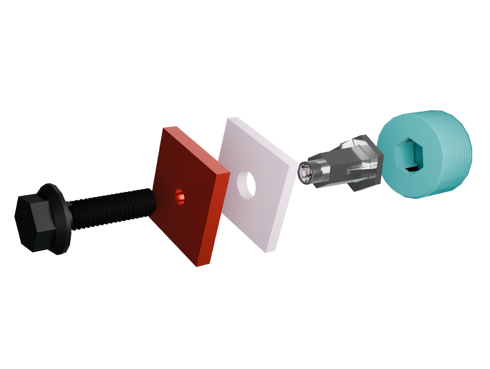

Busbar Fixation for Commercial EV’s PDU – Volvo Trucks
Master’s thesis on developing new fixation concepts for high-voltage busbars in Volvo’s traction voltage PDU to improve mechanical robustness, electrical/thermal safety, and assembly efficiency.
View case study